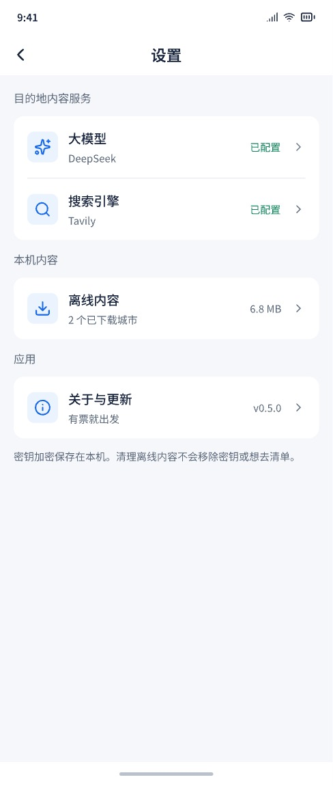
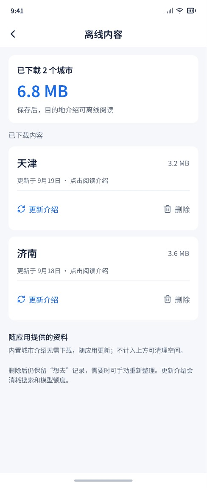
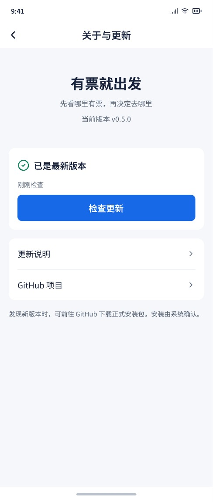

导航方案已确定，继续细化设计。B 保留作对比参考。
可点击画面中的「想去」入口和底栏，体验页面切换。查询表单仅为视觉示例。
查票与想去并列，适合经常翻收藏、挑目的地。
首页 ⇄ 想去：通过底栏切换，各自保留位置。
保留现有页面结构，适合主要查票、偶尔看收藏。
首页 → 想去清单：点击入口进入，返回后继续查票。



这是设计对比稿：城市、日期、空间和版本状态为示例，画面展示完整内容。实际短屏和大字体将滚动内容，底栏与系统安全区固定。收藏不自动调用模型或搜索。